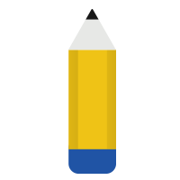
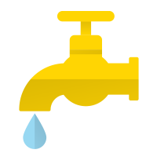

Ways to end Poverty around the world
-

1. Quality education Access to quality education which provides children with the knowledge and life skills they need to realize their full potential. It’s also essential to creating change in a child’s life. Plan International helps by training teachers, building new schools and breaking down barriers that prevent many children – and girls in particular – from attending school and staying in school.
-
2. Access to Healthcare Access to health is essential. Plan International helps communities build health clinics, train health care workers and invest in equipment and medicine, so children can grow up healthy and strong.
-

3. Water & sanitation Water and sanitation are also essential for every child’s survival. Each year, Plan International helps communities build school latrines, community water points and helps to establish organizations to ensure the continued management and maintenance of water points.
-
4. Economic security Economic security: means people have the skills and resilience they need to withstand hard economic times and grow their incomes. Plan International works to overcome poverty by helping communities around the world gain the economic security they need to thrive, this includes training people living in poverty to acquire the skills and knowledge they need to secure a livelihood, and support their families
-
5. Child participation Child participation: means that children are at the center of everything we do. Plan International helps children learn their rights and take active roles within their community. Child participation helps children engage in citizenship, express their views and make decisions that will shape their future and influence the people around them.